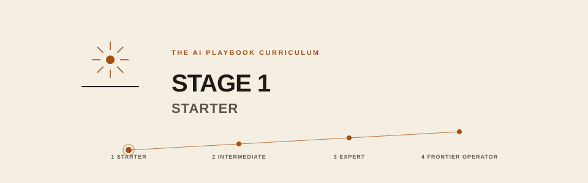

1-starter/README.md
Stage 1 Starter
You are: new to AI, or an occasional user without a system. You will become: a competent power user — knows the jargon, has personal system prompts, routes tasks to the right model, ships real work with AI. The Curriculum's pace: 30 days at 30-60 min/day.

Prerequisites
- None enforced
- Willingness to spend 30-60 minutes a day for a month
- Recommended (not required): If your files, notes, and knowledge are not yet in a system AI can reach (Markdown, cloud drive, or vault), consider running The AI Playbook, Stage 1 Layers 1–3 first. Stage 1 will work either way — but the modules on files, RAG, and context assume you have a knowledge base to point at. See PLAYBOOK-AND-CURRICULUM.md for the full mapping.
Exit criteria
- You have a master system prompt and About-Me block
- You have a personal prompt library (20+ prompts)
- You know which model to route which task to
- You can pass the 15-question jargon fluency test
- You've shipped at least 5 real work outputs using AI
- For companies: AUP signed, accounts procured, first two department copilots piloting
Tracks
00-start-here/— kit philosophy, 30-day sequence, full indexindividual/— 9 sections for personal capabilitycompany/— 10 sections for organizational rolloutshared/— glossary, eval templates, checklists, templateseli10/— plain-language companions for the essential concepts
How to work Stage 1
- Start with
00-start-here/README.md(5 min) - Follow
00-start-here/30-day-starter-sequence.mdday by day - If a section feels dense, open the
eli10/twin first - For companies: run the individual sequence AND the company sequence in parallel
If you finish this stage, you have the foundation to become a builder.
Formerly Level 1 Essentials.